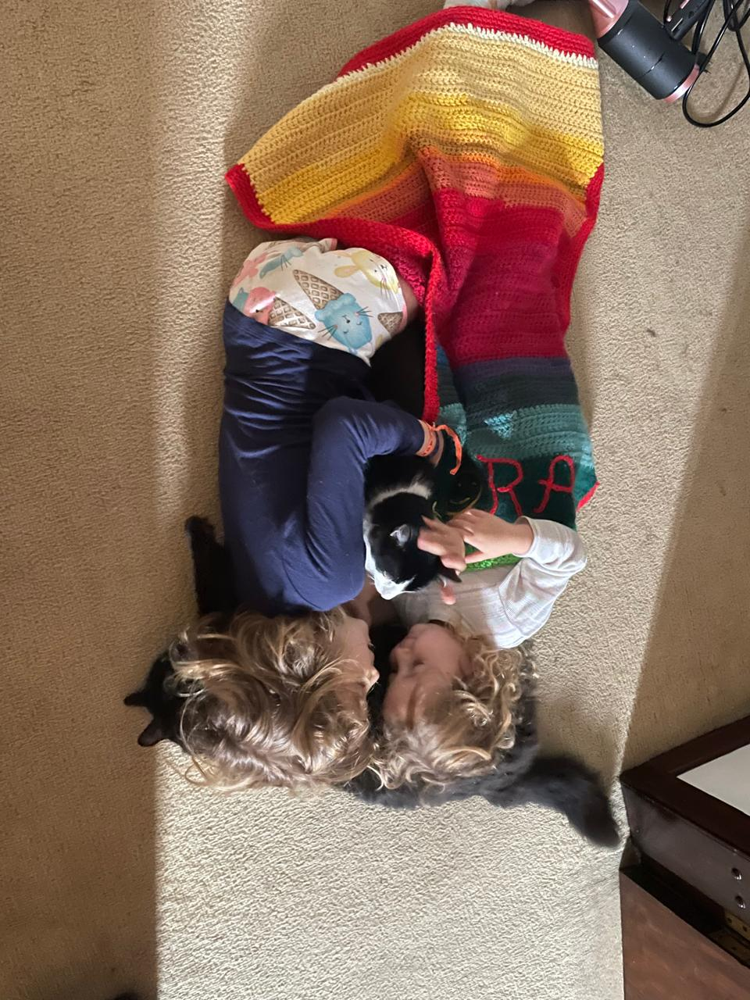
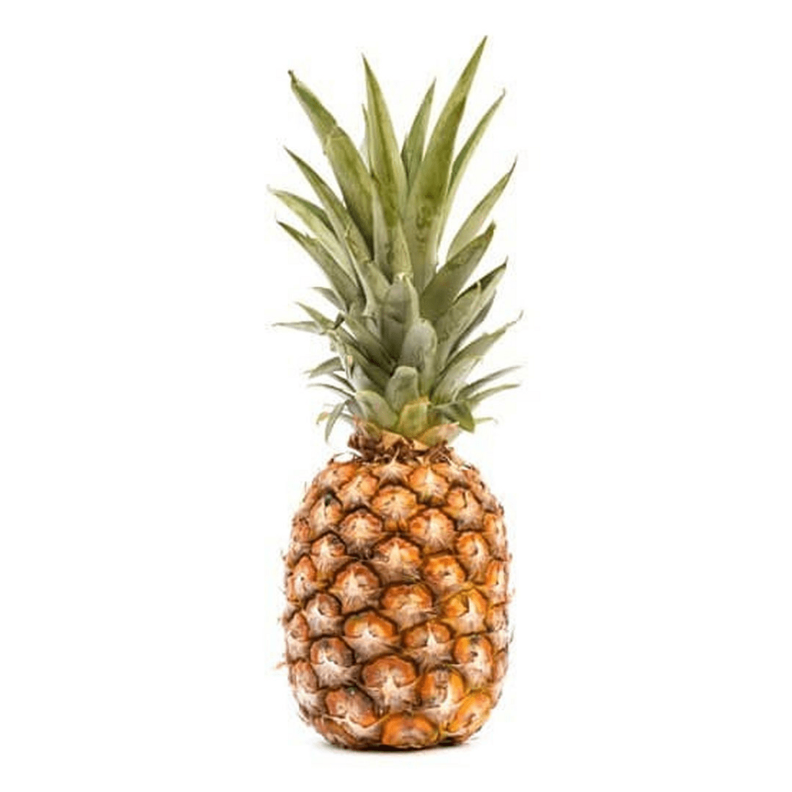
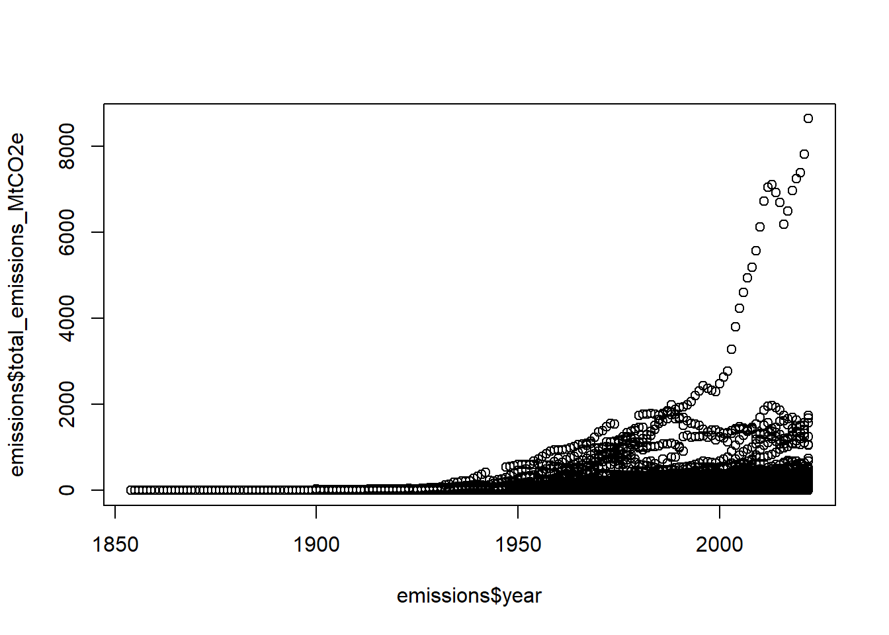

x <- 2+2
x[1] 4Para obter mais informações, visitar o site https://quarto.org.
O cabeçalho yalm define o tema, o estilo, fonte, table of contents, etc…
Identação é feita utilizando o símbolo # sendo a quantidade referente a subseções. Assim # corresponde ao título mais abrangente, ## corresponde a um subtítulo, ### a um sub-subtítulo e assim sucessivamente
Duas maneiras com resultados diferentes, sendo o primeiro com a palavra que levará ao link entre colchetes [] e o endereço desejado entre parênteses () e a segunda forma, onde todo o endereço irá aparecer, quando colocado entre <>
Uma palavra em negrito e uma em italico.
Vamos destacar um texto muito importante que deve ser destaque
Aqui a gente pode escrever qualquer coisa
Inclusive codigos do R - mas eles nao vao rodar
x<- 2 + 2Quando se coloca > antes do texto ele fica destacado como bloco de notas
Esse vai ser um bloco de notas
Pode escrever o que quiser aqui
colocar sub-itens também é possível e
fica bonitinho
Várias informações em relação a sintaxe do texto são descritas em blocos definidos por ::: no início seguidas de callout-note, -tip ou warning, e ::: ao final.
Essa é uma caixa de aviso!
Essa é uma dica
Essa é uma caixa de ATENÇÃO!
Para dar seu próprio nome em português por exemplo colocar o título depois de ##
Você é capaz <3
O markdown entende imagem quando temos uma exclamação seguida do endereço
Colocar a legenda entre colchetes e endereço do arquivo entre parênteses. Pode-se definir o tamanho com {width = xx%} em relação ao tamanho proporcional a figura original. Também pode ser definido um tamanho específico em inches {width = xin} ou milímetros {width = xx}


Note que essa opção vai salvar a figura numa pasta no seu computador e direcionar para ela

Usa-se ``` {r} para delimitar os blocos de códigos - pode-se fazer de forma mais rápida com o botão
x <- 2+2
x[1] 4Vamos fazer um gráfico usando um dataset sobre emissões de C por ano, para isso, vamos importar os dados:
emissions <- readr::read_csv('https://raw.githubusercontent.com/rfordatascience/tidytuesday/master/data/2024/2024-05-21/emissions.csv')Fazer o gráfico simples
names(emissions)[1] "year" "parent_entity" "parent_type"
[4] "commodity" "production_value" "production_unit"
[7] "total_emissions_MtCO2e"plot(emissions$total_emissions_MtCO2e~emissions$year)
Para inserir a legenda e informações relativas a figura (como tamanho, etc), usa-se o símbolo #| no início do código.
plot(emissions$total_emissions_MtCO2e~emissions$year)
As equações no Quarto são escritas com a linguagem LaTeX (assim como no RMarkdown).
Para que a equação apareça no meio do texto, devemos escrevê-la entre dois cifrões: \(2pi*r^2\)
Para ficarem destacadas no texto:
\[RE = (1- \frac{Nut_{old}}{Nut_{mat}} MLCF)*100\]
Tem vários jeitos, veja aqui, mas vou mostrar usando um pacote para isso, o kableExtra que - eu acho - deixa bem bonitinho. Tambem tem como inserir igual no word usando o visual.
Da mesma forma que os gráfico, usa-se #| seguido das opções diversas para tabelas
library(kableExtra)
tab <- kable(head(emissions))
kable_styling(tab, full_width = F, bootstrap_options = c("striped", "hover", "condensed"))Para fazer abas usa-se ::: panel-tabset
| year | parent_entity | parent_type | commodity | production_value | production_unit | total_emissions_MtCO2e |
|---|---|---|---|---|---|---|
| 1962 | Abu Dhabi National Oil Company | State-owned Entity | Oil & NGL | 0.91250 | Million bbl/yr | 0.3638848 |
| 1962 | Abu Dhabi National Oil Company | State-owned Entity | Natural Gas | 1.84325 | Bcf/yr | 0.1343552 |
| 1963 | Abu Dhabi National Oil Company | State-owned Entity | Oil & NGL | 1.82500 | Million bbl/yr | 0.7277697 |
| 1963 | Abu Dhabi National Oil Company | State-owned Entity | Natural Gas | 4.42380 | Bcf/yr | 0.3224525 |
| 1964 | Abu Dhabi National Oil Company | State-owned Entity | Oil & NGL | 7.30000 | Million bbl/yr | 2.9110786 |
| 1964 | Abu Dhabi National Oil Company | State-owned Entity | Natural Gas | 17.32655 | Bcf/yr | 1.2629390 |
Existe uma infinidade de opções e formatações e tipos de documentos, basta querer aprofundar o conhecimento e não desistir perante as dificuldades.